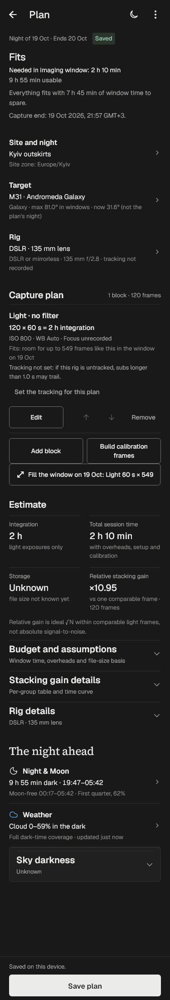
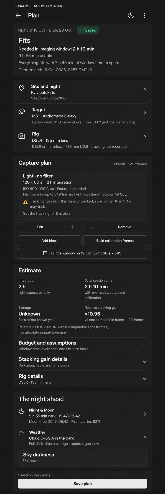

Current · real Flutter render
Synthetic QA fixture, dark theme, 100%, 375 logical px wide. This is a source screenshot.Open current image

Concept B · not implemented
Actual generated raster. Approximate typography, icon strokes and scientific graphics are not implementation specifications.Open concept image
